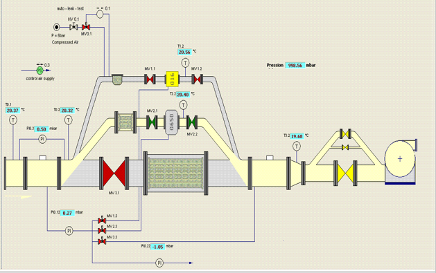

Les compteurs de gaz à turbine sont des compteurs de vitesse dans lesquels l’écoulement du gaz
fait tourner la roue d’une turbine dont la vitesse de rotation est proportionnelle à la vitesse linéaire
du gaz.Ce mouvement est transmis mécaniquement au totaliseur via la commande magnétique.
Les compteurs à piston rotatifs sont des compteurs volumétriques.La circulation
du gaz entraine en rotation les deux pistons qui emprisonnent et transmettent à
chaque rotation,un volume de gaz précis.Ce mouvement est transmis mécaniqu-
ement au totaliseur via la commande magnétique.
Tous les instruments de mesures y compris les compteurs à turbines et à pistons rotatifs, seront soumis à des actions d’étalonnages périodiques selon une fréquence bien déterminée. La validité d’étalonnage est de 5 ans pour les petits calibres et 10 ans pour les grands calibres mais entre temps les compteurs peuvent montrer des anomalies qui nécessitent des actions de vérifications sur un banc d’étalonnage. L'étalonnage des compteurs est fait par un banc d’étalonnage approuvé par les services officiels de métrologie selon une procédure conforme aux dispositions de la réglementation. Le banc d’étalonnage fonctionne selon le principe de comparaison avec des compteurs de références préalablement étalonné dans un centre de vérification agréé, placé en série avec le compteur à vérifier. Le déroulement d’étalonnage nécessite une salle climatisée : Température, humidité, pression bien contrôlée et netteté d’air.
